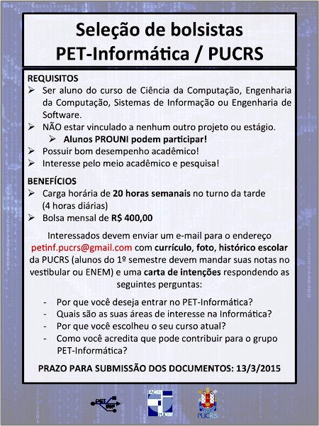

PET Informática
Programa de Educação Tutorial da Faculdade de Informática da PUCRS
PET Informática
Programa de Educação Tutorial da Faculdade de Informática da PUCRS
Página Inicial
Sobre
Integrantes
Atividades
Notícias em destaque
